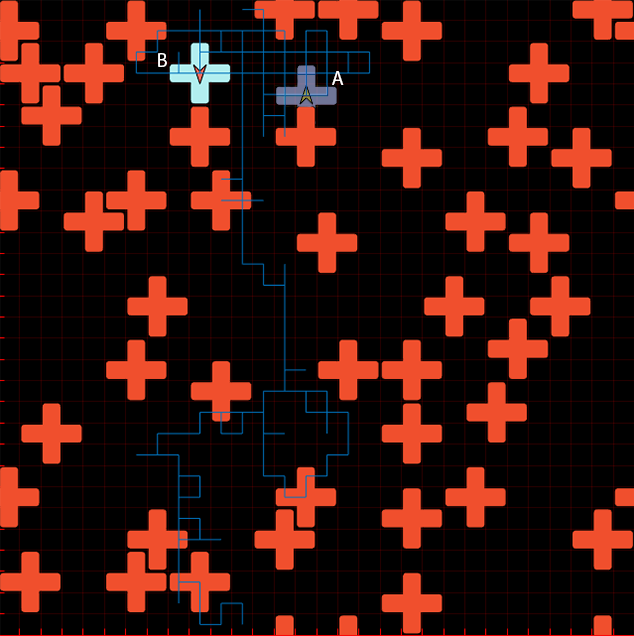

In 2D a system undergoing jamming will cause particles to be confined in local cages. In 3D however that does not have to be the case - frozen clusters of particles appear at a density in which particles may still diffuse across the system. Only at a higher density particles become caged. The reason is geometrical. We use a fast algorithm bypassing the need to run the dynamics of the system to uncover the underlying structure of the system ...

Cells have been shown to share similarities with glasses. Amorphous structure and dynamical heterogeneities are among several such examples. The N3 model is known to have some glassy properties such as critical slowing down. Inspired by these biological systems and we propose an active N3 model which shows a rich variety of dynamics, most notably aggregation of particles due to activity ...

The motion of a charged tracer particle moving through a system of diffusing particles had been studied widely both theoretically and experimentally. Here we study the motion of an active particle tracer through a thermal geometrically frustrated glassy system. This simple model allows us to better understand the motion of the particle analytically and gain deeper insight on the diffusivity of active particles ...
